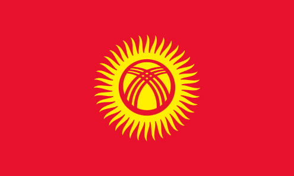
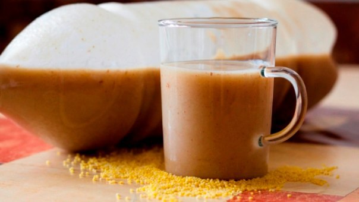

Меня зовут Жылдыз и я родилась и выросла в солнечной Киргизии. Работаю в Москве больше десяти лет. Живу, работаю, отдыхаю и наслаждаюсь здешней жизнью, но в то же время часто замечаю что чего-то домашнего не хватает, того ощушения когда ты чувствуешь что-то нородное. Однажды у меня обсалютно неожиданно появилась идея изготавливать Киргизские нородные напитки и давать нашим гражданам ощутить тот самый уют дома, а также угащать наших друзей не из Киргизии
После того как меня посетили такие мысли, я сразу заказала у свои знакомых из Киргизии купить достачно нужных продуктов для приготовдении "босо". Босо - это киргизский народный напиток, очень хорошо помогающий человеческому организму. И вот через пару дней прибыли продукты. В тот же вечер я начала готовить, как правильно варить этот замечательный напиток я знаю с самого детсва, отчетливо помню как его варили наши старшие сестры, тёти и апашки. На следующий день, когда уже всё было готово, я пошла и успешно продала свой натуральный и чистый товар мололдой паре из Киргизии. Увидел удивление и поднятие настроения у молодых людей, я получила сильную мативацию продолжать это дело. Таким образом я начала своё дело. После я сделала ещё один важный шаг, закупилась другими продуктами и начала варить превосходный напиток "жарма". Теперь я могу по немногу увеличивать своё дело!
